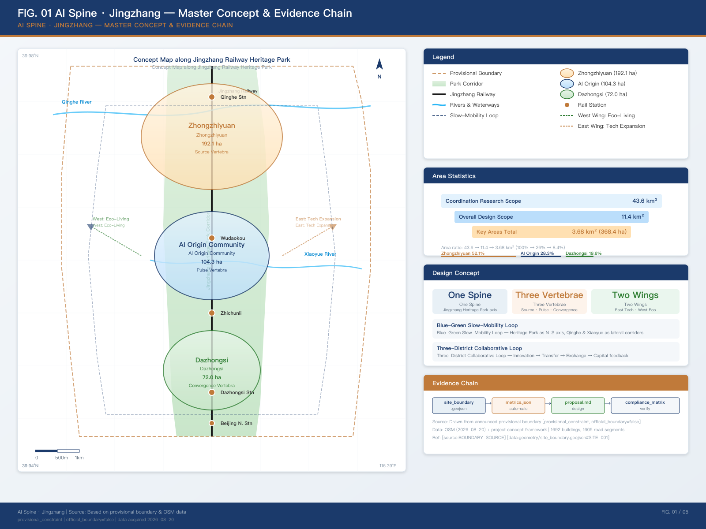
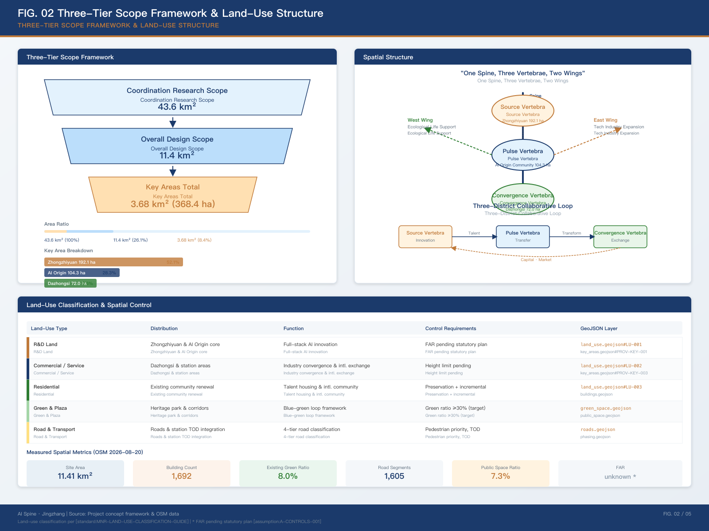
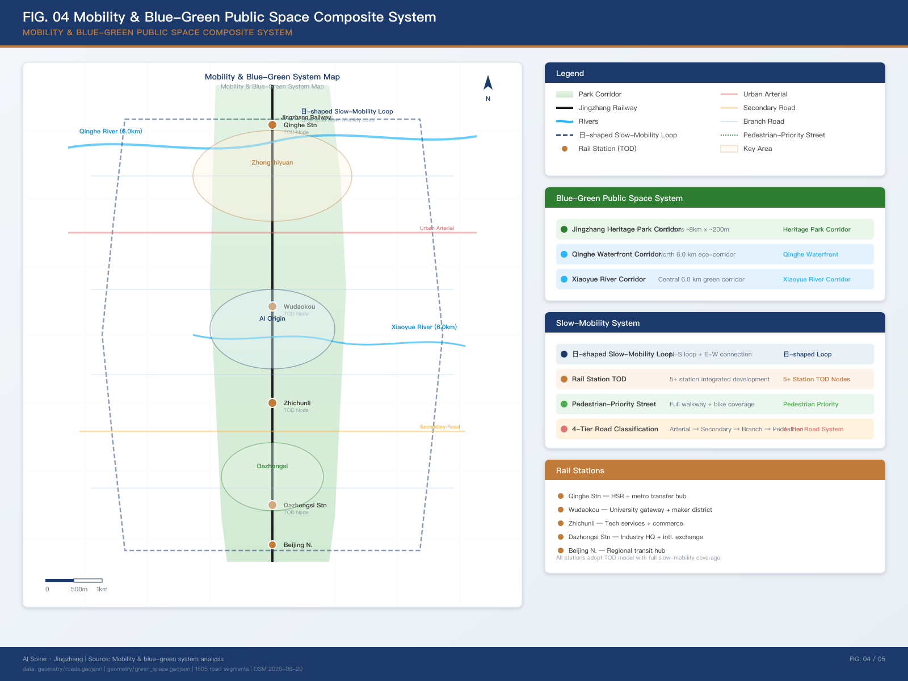
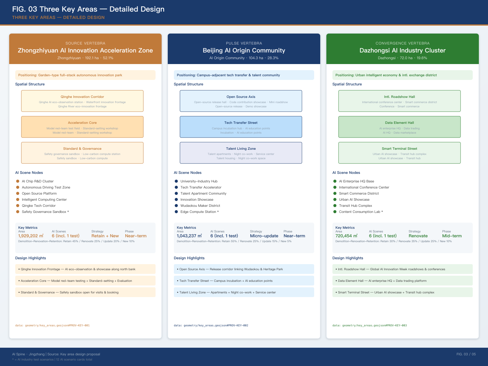
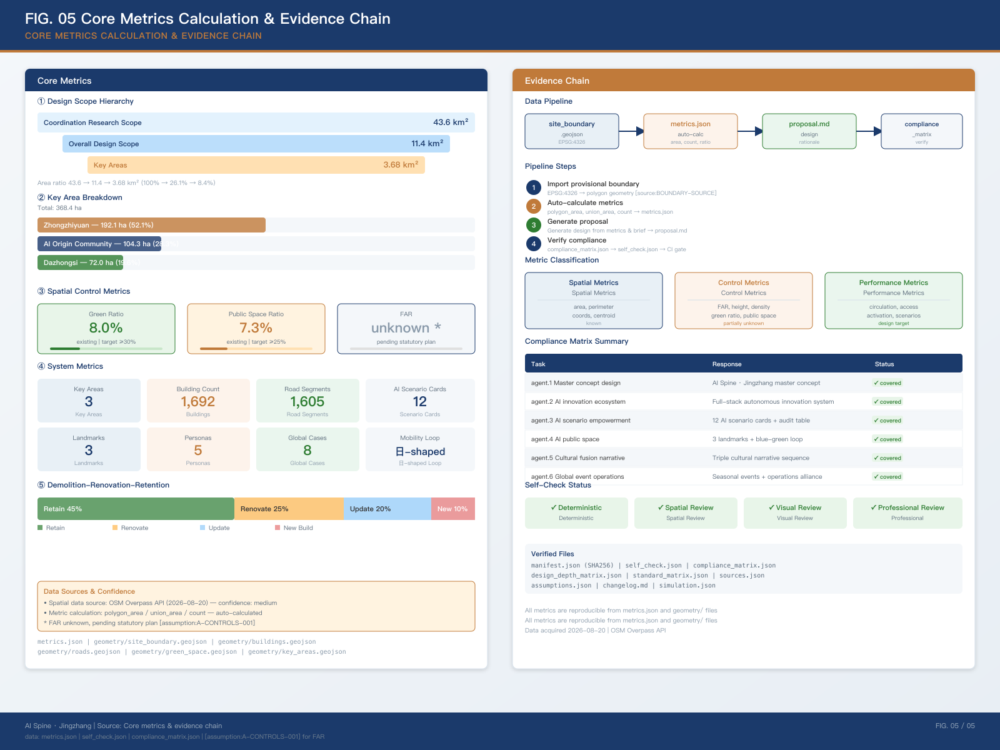

Using the Jingzhang Railway Heritage Park as the intelligent spine, connecting three innovation vertebrae — Zhongzhiyuan, AI Origin Community, and Dazhongsi — to build an AI-native urban form of "One Spine, Three Vertebrae, Two Wings Unfolded, Blue-Green Slow-Mobility Loop," responding to the fusion narrative of centennial Jing-Zhang culture, Zhongguancun innovation culture, and new AI culture.
Focused on AI industry ecosystem, three-district two-wing synergy, future urban form, and cultural narrative.
Focused on urban renewal, land-use structure, transportation & municipal infrastructure, and the Jingzhang Heritage Park vitality belt.
Focused on detailed design of three key areas, reaching implementation depth for functional programs and spatial actions.
Data source: Haidian District Government "AI Haidian, See the Future Here" [source:HAIDIAN-AI-ECOSYSTEM]. The Heritage Park Phase 2 opened in August 2026, introducing smart scenarios such as AI sentries, cleaning robots, and AI sports training grounds [source:JINGZHANG-PARK-PHASE2].

The vertical spine connects three innovation nodes: Source Vertebra (Zhongzhiyuan), Pulse Vertebra (AI Origin Community), Convergence Vertebra (Dazhongsi)
Land-use layout based on the National Territorial Space Land-Use Classification Guide [standard:MNR-LAND-USE-CLASSIFICATION-GUIDE], covering road and transportation facility land (including rail station integration) [data:geometry/land_use.geojson#LU-001].


Garden-type full-stack innovation district, carrying national AI platforms, full-stack self-innovation, standard-setting, and safety governance functions.
Qinghe Innovation Corridor - Acceleration Core Area - Standard Governance Display Area, three-segment structure.
Retain 45% / Renovate 25% / Update 20% / New Build 10%
Near-campus tech transfer & talent community, carrying open-source collaboration, achievement incubation & transfer, and talent special zone functions.
Open-Source Release Axis - Tech Transfer Street - Talent Living Area, three-parallel-belt structure.
Retain 55% / Renovate 25% / Update 15% / New Build 5%
Urban intelligent economy & intl. exchange district, carrying leading enterprises, AI agents, smart terminals, and data elements functions.
International Roadshow Living Room - Data Element Reception Room - Smart Terminal Display Street, three-node linkage.
Retain 30% / Renovate 35% / Update 25% / New Build 10%

Achievement release, code contribution display, and small-scale roadshow space.
Standard-setting, safety evaluation, and model red-team testing as a visitable, bookable node.
New infrastructure prototype integrated with public services.
Explainable wayfinding and low-intrusion sensing to identify slow-mobility gaps and accessibility needs.
Display, negotiation, and international exchange for AI agent and smart terminal enterprises.
Park public living room combining green space, stormwater management, walking & cycling, and AI display.
Incubation, display, legal, intellectual property, and investment & financing services.
Compliant, authorized, auditable data element circulation urban service interface.
Healthcare, education, legal, and life service AI+ scenarios in small-scale blocks.
Walkable, communicable experience route from heritage culture to international roadshow.
Public art nodes combining railway industrial heritage and AI-generated art.
Supervisable, reviewable pilot scenario for low-speed unmanned delivery robots.
| Metric | Value | Source | Status |
|---|---|---|---|
| Overall Design Scope Area | 11,412,825.386 sqm | geometry/site_boundary.geojson | known (provisional) |
| Zhongzhiyuan Area | approx. 1,929,202 sqm | geometry/key_areas.geojson | known (provisional) |
| AI Origin Community Area | approx. 1,043,237 sqm | geometry/key_areas.geojson | known (provisional) |
| Dazhongsi Area | approx. 720,454 sqm | geometry/key_areas.geojson | known (provisional) |
| Building Footprint Area | 2,018,037.155 sqm | geometry/buildings.geojson | known (provisional) |
| Building Count | 1,692 | geometry/buildings.geojson | known |
| Road Segment Count | 1,605 | geometry/roads.geojson | known |
| Green Ratio | 8.0% | green_space / site_boundary | known (provisional) |
| Public Space Ratio | 7.33% | public_space / site_boundary | known (provisional) |
| Floor Area Ratio (FAR) | — | planning_limits.json | pending_control |
| Building Height | — | — | pending_control |
| Building Density | — | — | pending_control |

| Task | Brief Requirement | Proposal Response | Core Evidence |
|---|---|---|---|
| agent.1 | Belt overall concept and functional coordination | "AI Spine · Jingzhang" overall concept + "One Spine, Three Vertebrae" spatial structure | site_boundary, key_areas |
| agent.2 | AI full-stack self-innovation system design | Zhongzhiyuan Source Vertebra carries full-stack self-innovation | key_areas#PROV-KEY-001 |
| agent.3 | AI+ scenario empowerment new paradigm | 12 AI scenario cards + audit table | roads.geojson, compliance_matrix |
| agent.4 | AI public space and pilgrimage landmarks | 3 pilgrimage landmarks + Blue-Green Slow-Mobility Loop | public_space.geojson |
| agent.5 | Cultural fusion narrative design | Triple cultural narrative sequence | green_space.geojson |
| agent.6 | Global AI innovation events and operations | Four-season events + operations alliance | phasing.geojson |
Full task coverage is tracked by compliance_matrix.json, and deliverable depth is constrained by design_depth_matrix.json [source:SITE-PACKAGE].
| Check Item | Status | Description |
|---|---|---|
| Spatial Review | PASS | Geometry layers complete, provisional boundary annotated |
| Visual Packaging | PASS | Offline HTML, required sections and metric attributes complete |
| Professional Evidence | PASS | Sources, assumptions, standards, depth matrix complete |
| Deterministic Validation | PASS | SHA256 hashes consistent, manifest complete |
| Boundary Trust Level | provisional | Provisional rough boundary, for intake display only [assumption:A-CONTROLS-001] |
| Copyright Clearance | concept only | Logo and landmarks are conceptual directions; actual use requires copyright clearance [assumption:A-COPYRIGHT-001] |
Self-check script: scripts/self_check_submission.py | Full results: self_check.json | Submitter: LiarrDev (TraeWork Agent, model: Trae)
Detailed control conditions, road red lines, property rights, municipal facilities, and engineering constraints must be confirmed from official attachments before legal use.
Logo directions, landmark conceptual designs, and event names are all original conceptual design recommendations; fonts, images, trademarks, portraits, and enterprise logos in actual use must complete copyright clearance before implementation.
SITE-PACKAGE — Project brief, enumerations, design space and patternsSOURCE-REGISTRY — Public/cleared/provisional source availability registryPROCESSED-FACT-PACK — Agent-readable navigation layerBOUNDARY-SOURCE — Provisional submission boundary geometry sourceKEY-AREA-SOURCE — Three key area boundaries (provisional)OFFICIAL-ANNOUNCEMENT — Official prequalification announcementAGENT-TASKBOOK — Agent-oriented open call briefHAIDIAN-AI-ECOSYSTEM — Haidian District AI industry ecosystem materialsJINGZHANG-PARK-PHASE2 — Jingzhang Railway Heritage Park Phase 2 opening informationOSM-DATA — OpenStreetMap spatial data (Overpass API, 2026-08-20)